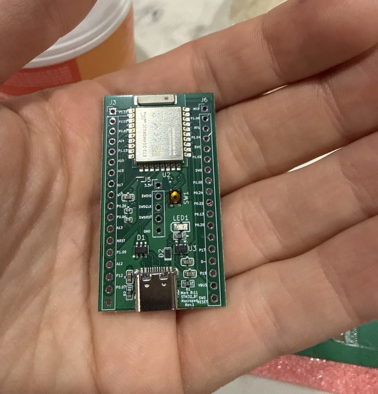
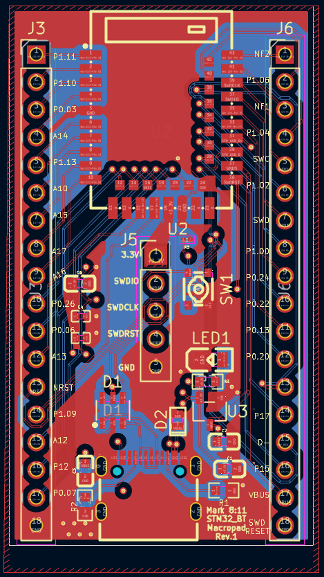
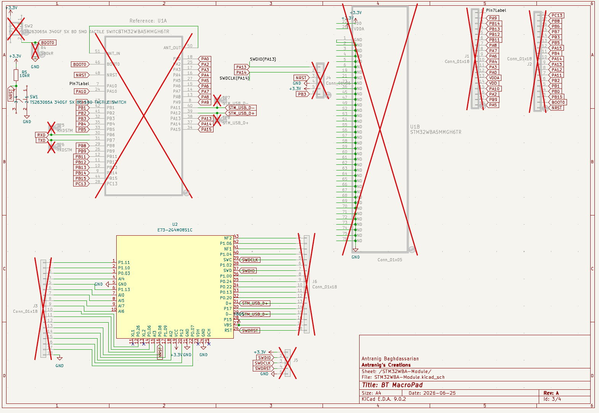
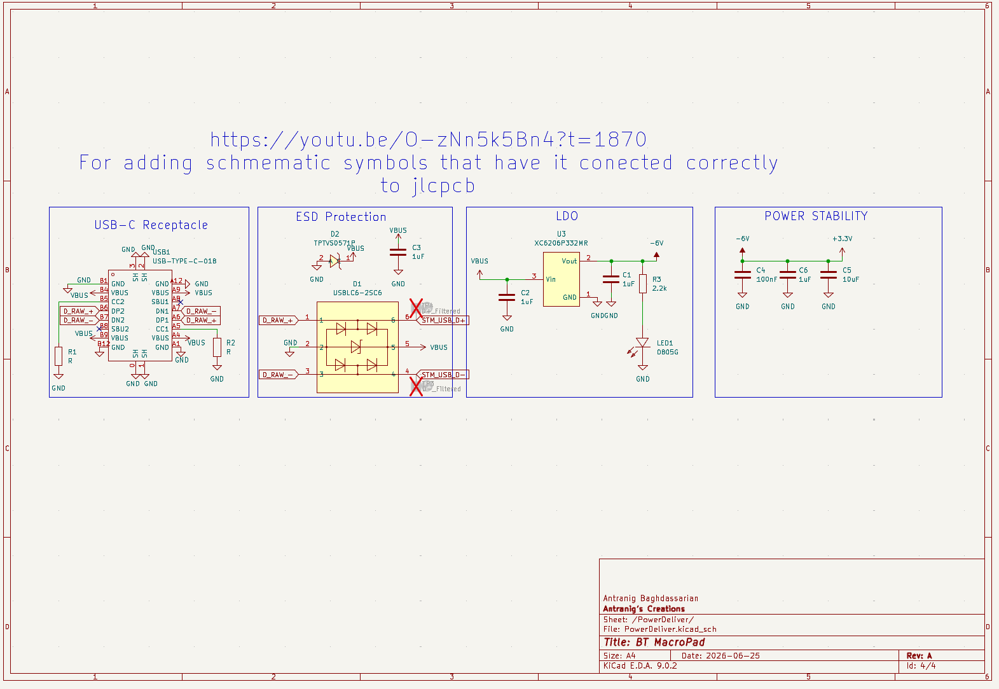
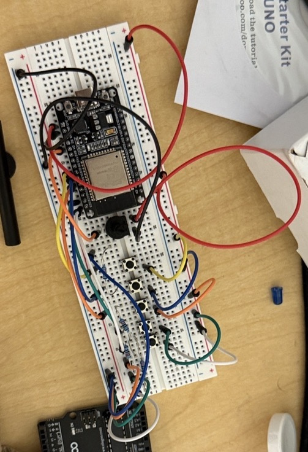
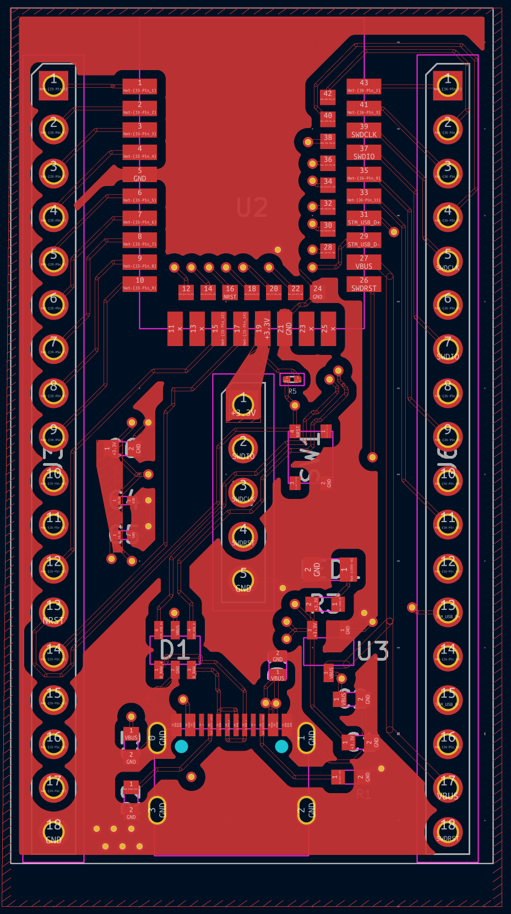
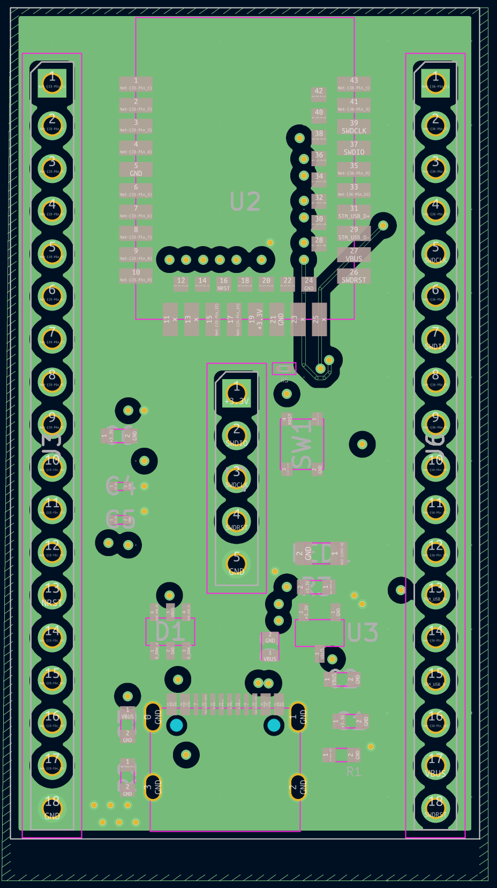
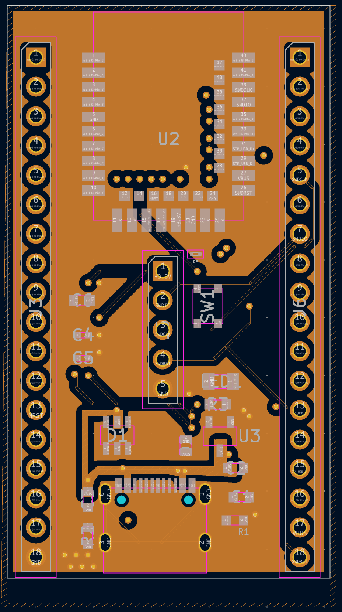
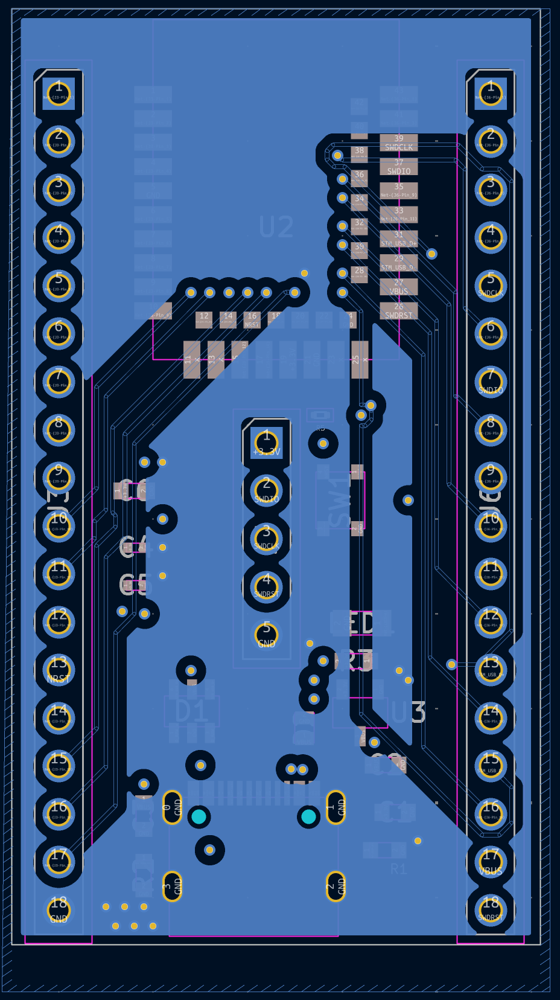

Bluetooth Macropad
I started this project in June 2026. It is currently paused.
Inspiration (why did I do this?)
Imagine you're:
- Washing Dishes
- Gaming
- Eating Food, etc
All of these make it hard to handle keyboard, especially from afar. BUT what if while you're doing those you want to:
- unmute your mic on Discord?
- Pause a video?
- Speed up a video?
- Program a specific macro?
That is what I set out to create. First step is to understand the hardware. What small bluetooth microcontrollers are like, how is working with the bluetooth stack, a real time operating system, what is the power consumption I can expect, how should I plan layout and PCB?
Technical
4 Layer PCB Board. Layer Breakdown:
- Signal Traces
- Ground
- Power (V_BUS (5V), 3.3V) (+ few signal traces I couldn't fit on those 2 layers)
- Signal Traces
USB-C → LDO (5V → 3.3V) → BT Chip → Header Pins
The components include the EBYTE E73-2G4M08S1C Bluetooth module (nRF52840 inside) and the XC6206P332MR LDO.
Code
The initial code is for an ESP-32 and written in C++ as an Arduino Sketch.
Future Envisionments
- Miniaturize the macropad. Implement a 3 position switch to go between 3 different devices connected to it.
- Test driving 50mm drivers.
- Work on BT stack that can reliably stream audio.
- Detachable Microphone.
- Analog potentiometer for volume control.








